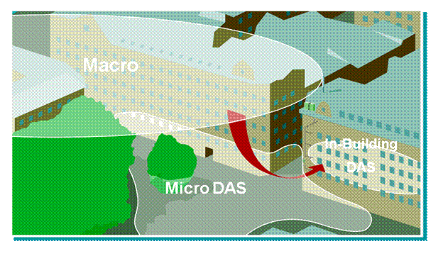
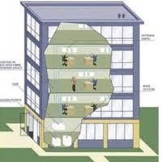
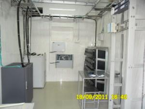
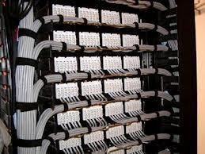
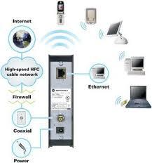

Services Offered -
- RF Survey, Customer input analysis, building layout analysis through surveys and
Landscape Views of Site.
- Planning for RF distribution network for installation of Micro cell (Micro & Compact) /
RF as well as Optical Repeater
- Cable route survey
- Walk test to understand the RF propagation behavior (different per building)
- Support for Customer presentation to Building authorities
- Recommendation on BSS parameters for desired Handover behavior
- Coverage confinement of Macro-cell as well as Repeater
- Implementation IBS network for mobile operatrs.
Few of our completed Prestigious IBS Projects in Pan India for various operators &
infrastructure providers:
- Pune Central – Shivaji Nagar, Pune
- Kumar Cerebrum II – Kalyani Nagar, Pune
- Brand Factory – Camp, Pune
- Hotel Orchid – Kalyani Nagar, Pune
- Infosys Campus Buildings – Hinjewadi, Pune


Our Esteemed Clients:
Integrated Solutions:
Skymag also provides integrated solutions and services for communications infrastructure for:
- Structured Cabling
- Fibre Optic Cabling
- Wireless Networking
- Coax Services
- Support Services
With extensive experience of many types of installation across a wide variety of environments,
Skymag is a recognized profile in the connectivity arena. Skymag’s highly skilled and trained
workforce is dedicated to delivering connectivity solutions on time, to budget and to the highest
quality.
Skymag’s Connectivity service includes:
- Dedicated design consultancy resource
- Pre-termination - off-site facility for both copper and fibre
- Proven project management process and delivery
- Stringent Health & Safety procedures
Skymag builds communications infrastructure solutions for data network and Voice technology
manufacturers. We deliver connectivity solutions in a diverse range of environments such as standard
office buildings, data centres, retail outlets, remote facilities, university campuses, pharmaceutical
R&D environments, MOD, even in the VVIP’s Homes.

STRUCTURED CABLING:
Skymag networking and telephony service includes:

- Pre-sales design consultancy service
- Specialist voice and data consultants
- Client proof of concept/technology facility
- Proven implementation processes
- Network health checks

Skymag highly experienced team of technical consultants, system designers, project managers and
post-sales support personnel ensure that even the most complex solution is delivered through a
single project management team.
For Optical Fiber cable (OFC) laying, cable splicing and testing, Etel through its professional
services puts you on the way to complete fiber optic network services. We're fiber optic experts!
We are known for our competitively priced and high quality of service. All employees are trained in
trench and excavation safety. In OFC domain , the following are our key services:
- Fiber optic splicing (fusion and/or mechanical)
- Complete testing services, such as end to end, reel testing, and splice loss testing, ORL, power meter/laser source testing and WDM testing
- Connectorization and polishing.
- Trenching and Ducting.
- Duct Integrity test.
- Blowing/ pulling of cable.
- Placing Inner duct, Manholes and Duct proofing.
- Emergency restoration
- Areal cabling.
- FTTX Planning and Deployment